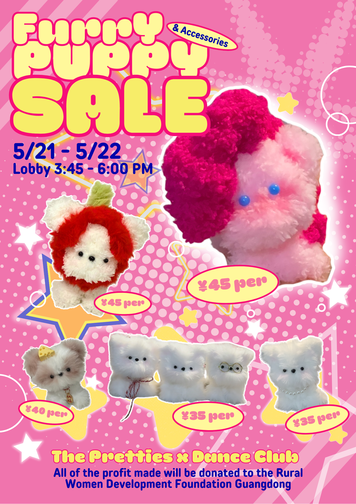

Why I Love Beading and Crafting
Beading and crafting have become my favorite hobbies because they give me a chance to be creative while also relaxing. I enjoy choosing colors, materials, and patterns, then turning them into something unique.
These hobbies are calming and rewarding. Whether I'm stringing beads or gluing pieces together for a project, I get to take a break from stress while making something beautiful.

My Favorite materials to work with:
- glass beads
- seed beads for patterns
- iron wire & stretchy thread
- pipe cleaners
- fabric for DIY crafts
My Projects

My beading projects often include bracelets, necklaces, and keychains. I love how small beads can be turned into detailed patterns and colorful designs.
Beyond beading, I also enjoy crafting with pipe cleaners, fabric, and paper. I've made bookmarks, greeting cards, and small decorations that brighten up my room or make meaningful gifts for friends. Moreover, I have sold my creations for various fundraisers in my school to donate money for people in need.
This is a poster for the fundraisers that I have organized to sell my crafts
Learning and Growing
Beading and crafting have taught me patience, attention to detail, and problem-solving. I've learned how small changes—like using stronger thread or mixing textures—can make a big difference in the final piece.
I get inspiration from online tutorials, craft markets, and social media. Seeing the endless possibilities motivates me to try new projects and challenge myself to improve.